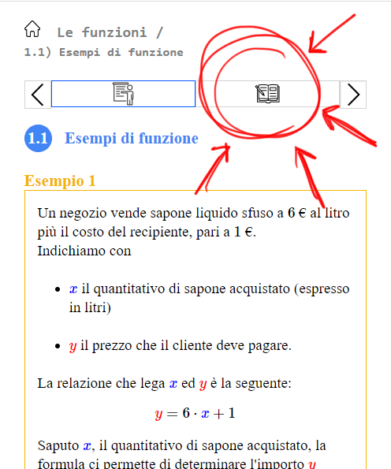

Svolgere gli esercizi a risposta multipla relativi a ciascun paragrafo (li trovate cliccando sull'icona presente in alto a destra del paragrafo)

Esercizio 1
Riprendiamo l'esempio della funzione "Livello della batteria" elaborato in classe.
Rispondere alle seguenti domande.
Qual è il livello di batteria raggiunto dopo un'ora e mezza?
Qual è il livello di batteria raggiunto dopo 3 ore ed un quarto?
Dopo quanto tempo il dispositivo raggiunge il livello \(l = 77\)?
Immaginiamo che il dispositivo non si carichi completamente, arrivando ad un massimo livello di carica pari ad
\(80\).
Come possiamo modificare di conseguenza la legge che lega il livello di carica \(l\) ed il tempo \(t\)?
Mettendo in carica il cellulare da spento, la carica aumenta del \(20\%\) ogni ora.
Se invece il dispositivo è acceso, si sommano gli effetti della carica fornita dal caricabatterie e del consumo dovuto
all'utilizzo.
Modificare la funzione in maniera che descriva il livello di batteria di un cellulare acceso ed in carica.
 presente in alto a destra del paragrafo)
presente in alto a destra del paragrafo)
.png)